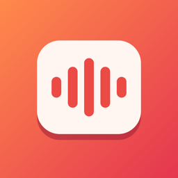

Local Flow
A private keyboard for iPhone that types like Apple's and lets you talk instead. Your voice never leaves the phone. · Version 1.3, 18 November 2026
Set up
- Open Local Flow once and allow the microphone. From version 1.2 the speech model is inside the app; version 1.0 downloads it once (about 670 MB).
- Add the keyboard: Settings › General › Keyboard › Keyboards › Add New Keyboard › Local Flow.
- Tap Local Flow in that list and turn on Allow Full Access. The keyboard needs it to receive your dictation from the app, to pass reply and rewrite requests to the app on your iPhone, and for key haptics. It contains no networking code.
- In any app, switch to the Local Flow keyboard with the globe key. Type, or tap the coral mic key, speak, and tap it again (it shows a check) to insert the text.
What it does
Typing
The keys type like Apple's keyboard: a tap lands on the nearest key, letters pop up while you hold them, accents are on a long press, a double space types a full stop, and holding the space bar moves the cursor. Key haptics are in Local Flow › Settings › Keyboard (they need Full Access).
Greek keyboard and the language key
Choose your keyboard languages and their order in Local Flow › Settings › Keyboard › Languages (English and Greek for now). With two languages, the EN/ΕΛ key left of the space bar switches between them: tap for the next language, hold it for the list. The space bar shows the language in use, and the keyboard starts in the one you used last. The Greek layout matches Apple's, with the accent key ΄ after π.
✨ Rewrite what you typed
Select some text, or leave nothing selected for the whole message, and tap ✨ Polish in the keyboard's top bar. Polish fixes spelling and grammar; Formal, Casual, Very casual and Excited change the tone; Greek ↔ English translates. Check the result on the card and tap Replace; Undo puts your text back. It runs on your iPhone: Polish and the tones need Apple Intelligence (iOS 26), the translations work on every iPhone. Typed text never leaves the phone.
Reply to a message
Long-press the message in your chat and tap Copy. In the Local Flow keyboard tap Reply, then the coral Paste button, and say what you want to answer ("yes, Tuesday works, ask her to bring the contract"). Tap the check: Local Flow writes the whole reply in the sender's language. Tap Insert reply to put it in the field, or Another version for different wording; nothing is sent until you tap your app's send button. Nothing to answer? Write a new message instead turns what you say into a complete message.
Read voice messages
In WhatsApp, Telegram, Messages, Voice Memos or Files, share a voice message and choose Local Flow. You get the transcript, an English translation of a Greek message (Greek for English, on request) and a short summary of long messages, with Copy and Reply. It is read on your iPhone and the audio is deleted right after.
Questions
Why is the orange microphone dot on?
iOS does not let a keyboard use the microphone, and only lets an app continue a recording it started while on screen. While "Listening for the keyboard" is on, Local Flow keeps the microphone open in the background and throws the audio away until you tap the keyboard's mic. Turn it off, or choose when it switches off, in Local Flow › Settings › Keyboard.
The keyboard opened the Local Flow app. Why?
That happens after a restart, a phone call, an update or the idle timeout, when the microphone was closed. Local Flow starts listening again; go back to your app and keep talking. The next dictation works in place.
Which languages does it understand?
Dictation: English, Greek and 23 more European languages, detected automatically. Translation as you dictate, Greek → English and English → Greek, on the phone. Keyboard layouts: English and Greek. Numbers and times are typed as digits ("7:30 PM"). Writing styles, Polish and replies on the phone use Apple Intelligence (iOS 26) and need an iPhone 15 Pro or newer.
Reply says it needs Apple Intelligence.
Replies are written on your iPhone by Apple's on-device model, which needs iOS 26 with Apple Intelligence. Without it, or for languages it does not write, you can turn on Better replies (cloud) in Local Flow › Settings › Voice messages & replies.
A name keeps coming out wrong.
Add it to the dictionary: on the keyboard tap ≡ › Add word to dictionary, or Local Flow › Settings › Dictionary.
Does anything go online?
Only if you turn on Better replies (cloud), which is off by default and asks you first. Then the message you are answering and what you said, as text, go to our relay and Anthropic's Claude to write the reply; nothing is stored on our server. Everything else (dictation, typing, ✨ rewrite, voice messages, translation, replies written on the phone) stays on your iPhone and works in airplane mode. Versions 1.1 and 1.2 never connected to the internet; version 1.0 downloaded the speech model once from Hugging Face. There are no accounts or analytics. See the privacy policy.
Contact
Open an issue at github.com/Bhargavareddy007/LocalFlow/issues. Please include your iPhone model and iOS version, and never paste anything private.